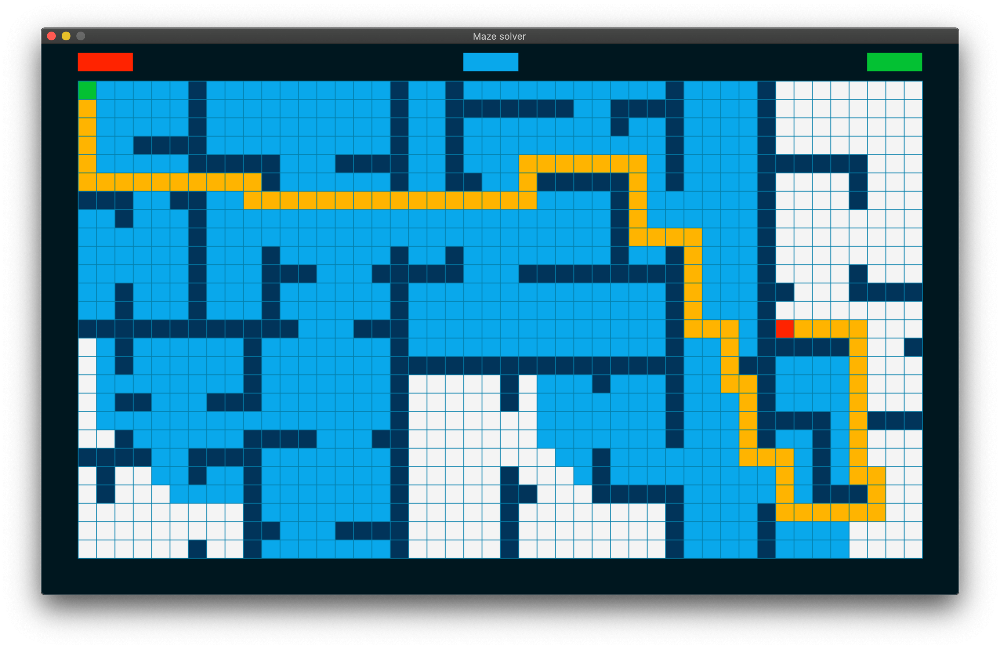

VOUS RECHERCHER QUELQU'UN QUI NE PEUT RÉALISER VOS IDÉES ?
Je suis la pour vous ! Je suis passionné par l'informatique en général et j'aime donner vie aux idées des personnes.
Vous êtes donc au bon endroit pour réaliser vos penser, je vous laisse découvrir mon Porte Folio.
À propos de moi
Mais tout d'abord je vais me présenter. Je m'appelle Conan Matis, passionné d'informatique depuis le plus jeune âge et je mon plonge dans le monde du développement. Curieux je m'informe sur tout les nouvelles technologies
Compétence
Hard Skill
- Développement C
- IOT
- Python
- MySql
- Hardware
- Html CSS

Soft Skill
- Curieux
- Organiser
- Priorise les tâches
Porte folio
Projet Pathfinding :
Le pathfinding (ou recherche de chemin) est le processus consistant à trouver le chemin optimal entre deux points dans un espace, en tenant compte des obstacles ou des contraintes.
